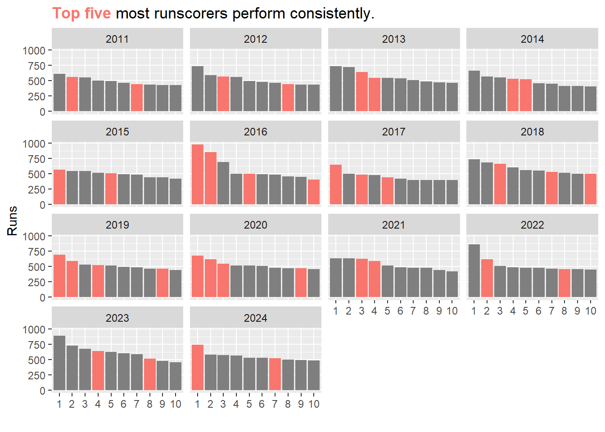

Code
# Load necessary libraries
# Using suppressPackageStartupMessages to keep output clean
suppressPackageStartupMessages({
library(ggtext)
library(lme4)
library(tidyverse)
library(plotly)
library(viridisLite) # For better color scales
})old ipl project. Lots of suboptimal decisions date:2022-04-17 rendered: 2025-03-31
The goal of the present project is to download, clean, wrangle, and obtain insights from ipl data.
The data will be downloaded from cricsheet.org in a zip format. We will unzip the files to a directory.
The next step would be load the data to R. We can achieve that using the read_csv function. However, while this data file is large and contains ball-by-ball details, it does not have match info i.e., who won the match and by how many wickets/runs.
We will obtain that data using the match info files. We can read only those files by adding them as a list for now.
One issue is that there are hundreds of files that match our pattern, and it is not possible to load them and use them effectively if we do it manually. One solution is to write a function that takes each of the file, appends it to a dataframe.
f1 <- function(x) {
y <- read.table(files[x], #load file
sep = ",",
skip = 2,
col.names = paste0("V",seq_len(5)), fill = TRUE)
y <- y[,-1] #remove the first column 'info'
y <- y %>% group_by(V2) %>% #number the column so that it can be pivoted wo errors
mutate(id = seq_along(V2)) %>%
ungroup() %>%
mutate(V2 = paste0(.$V2, .$id)) %>%
select(1, 2)
y <- pivot_wider(y, names_from = V2, values_from = V3) %>% # lay data on side
mutate(match_id = parse_number(file.path(files[x]))) %>%
select(!starts_with(c("player","regis")))
# the info file doesn't contain the match id! Parsing it from file names
}
df_info <- f1(1) # read the (meta)data file one
df_info <- df_info[FALSE, ] #keep only the headers
for (i in 1:length(files)) {
X <- f1(i)
df_info <- bind_rows(df_info, X)
}
df_info <- df_info %>%
rename_with(~str_remove(., "1")) %>%
select(match_id, match_number, everything()) %>%
select(!c(event, gender, venue)) %>%
arrange(match_id)Let’s take a look at the data frames we have so far.
final_df <- inner_join(df, df_info, by = 'match_id') # ugly but works..
#Clean up seasons
final_df <- final_df %>%
mutate(season.x = case_when(
season.y == "2007/08" ~ '2008',
season.y == "2009/10" ~ '2010',
season.y == "2020/21" ~ '2020',
TRUE ~ season.y),
season.x = as.numeric(as.character(season.x)))
#write.csv(final_df, "final_df.csv")
nanoparquet::write_parquet(final_df, "cricket/final_df.parquet") # 2025 change: saved 100x disk spaceList of all teams that have played IPL so far
# A data frame: 19 × 1
team
<chr>
1 Royal Challengers Bangalore
2 Kings XI Punjab
3 Delhi Daredevils
4 Kolkata Knight Riders
5 Mumbai Indians
6 Rajasthan Royals
7 Deccan Chargers
8 Chennai Super Kings
9 Kochi Tuskers Kerala
10 Pune Warriors
11 Sunrisers Hyderabad
12 Gujarat Lions
13 Rising Pune Supergiants
14 Rising Pune Supergiant
15 Delhi Capitals
16 Punjab Kings
17 Lucknow Super Giants
18 Gujarat Titans
19 Royal Challengers BengaluruLets start by making a function that gives some basic details about any given team
team_stat <- function(team_name) {
f1 <- final_df %>% #_team_select
group_by(season.x) %>%
arrange(desc(match_id)) %>%
filter(grepl(team_name, team, ignore.case = T) |
grepl(team_name, team2, ignore.case = T))
f2 <- distinct(.data = f1, match_id) %>% count() #match count
f3 <- filter(f1, grepl(team_name, winner, ignore.case = T)) %>%#winning matches
distinct(match_id) %>% count()
f4 <- filter(f1, grepl(team_name, winner, ignore.case = T))
df <- inner_join(f2, f3, by = "season.x") %>%
rename(matches = n.x, wins = n.y) %>%
mutate(win_rate = round(wins/matches * 100))
df$team <- f4[1,36] # add a new column with the team name
df <- df %>% unnest(last_col()) %>%
rename(team = last_col()) %>% #rename the column
ungroup() #ungroup the df
return(df)
}This particular function takes regex input
# A tibble: 12 × 5
season.x matches wins win_rate team
<dbl> <int> <int> <dbl> <chr>
1 2013 17 9 53 Sunrisers Hyderabad
2 2014 14 6 43 Sunrisers Hyderabad
3 2015 14 7 50 Sunrisers Hyderabad
4 2016 17 11 65 Sunrisers Hyderabad
5 2017 14 8 57 Sunrisers Hyderabad
6 2018 17 10 59 Sunrisers Hyderabad
7 2019 15 6 40 Sunrisers Hyderabad
8 2020 16 8 50 Sunrisers Hyderabad
9 2021 14 3 21 Sunrisers Hyderabad
10 2022 14 6 43 Sunrisers Hyderabad
11 2023 14 4 29 Sunrisers Hyderabad
12 2024 16 9 56 Sunrisers Hyderabad# A tibble: 17 × 5
season.x matches wins win_rate team
<dbl> <int> <int> <dbl> <chr>
1 2008 14 7 50 Delhi Capitals
2 2009 15 9 60 Delhi Capitals
3 2010 14 7 50 Delhi Capitals
4 2011 14 4 29 Delhi Capitals
5 2012 18 11 61 Delhi Capitals
6 2013 16 3 19 Delhi Capitals
7 2014 14 2 14 Delhi Capitals
8 2015 14 5 36 Delhi Capitals
9 2016 14 7 50 Delhi Capitals
10 2017 14 6 43 Delhi Capitals
11 2018 14 5 36 Delhi Capitals
12 2019 16 9 56 Delhi Capitals
13 2020 17 8 47 Delhi Capitals
14 2021 16 9 56 Delhi Capitals
15 2022 14 7 50 Delhi Capitals
16 2023 14 5 36 Delhi Capitals
17 2024 14 7 50 Delhi Capitals# A tibble: 4 × 5
season.x matches wins win_rate team
<dbl> <int> <int> <dbl> <chr>
1 2016 14 5 36 Lucknow Super Giants
2 2022 15 9 60 Lucknow Super Giants
3 2023 15 8 53 Lucknow Super Giants
4 2024 14 7 50 Lucknow Super Giants# A tibble: 1 × 5
season.x matches wins win_rate team
<dbl> <int> <int> <dbl> <chr>
1 2017 16 10 62 Rising Pune SupergiantPerformance of SRH(DC) over the years
Delhi
Performance of all the teams over the years
team_list2 <- team_list %>% filter(!grepl("X", team)) # Remove KXIPunjab
d2 <- NULL # create a empty df for stats of all teams
for (i in 1:nrow(team_list2)) {
d1 <- team_stat(word(team_list2$team[i], 1))
d2 <- bind_rows(d2,d1)
}
p4 <- ggplot(d2, aes(x = season.x, y = win_rate, group = 1)) +
geom_point() +
geom_line() +
facet_wrap(~team)+
scale_y_continuous(limits = c(0, 100))+
labs(
x = "",
y = "Win Rate",
title = "Winning Rate of the teams over the years")
ggplotly(p4)Which team has won the most matches?
final_df %>%
distinct(match_id,.keep_all = TRUE) %>%
count(winner) %>%
arrange(desc(n)) %>%
head(5) %>%
ggplot(aes(x = reorder(winner,desc(n)), y = n))+
geom_col()+
labs(
x = "Team",
y = "Number of Wins")+
scale_x_discrete(label = function(x) str_trunc(x, 19))+
scale_y_continuous(expand = c(0,0), limits= c(0, 200))How many seasons has the IPL been going on for?
# A data frame: 1 × 1
n
<int>
1 17Lets write a function to get the top-scoring batmen of any given year
high_scorer <- function(x = "", y = "", n = 10){
# x is a specific year
# y is a specific player
# n is the number of results to show
y1 <- final_df %>%
filter(grepl(x, season.x) & grepl(y, striker, ignore.case = T)) %>%
group_by(striker) %>%
summarise(runs = sum(runs_off_bat)) %>%
arrange(desc(runs)) %>%
head(n)
y1 <- y1 %>% mutate(rank = row_number(), year = x) %>%
select(3,2,1,4) %>% ungroup()
#write a loop to generate boundaries, averages etc. for each batsmen?
bound <- NULL
for (i in min(y1$rank):max(y1$rank)) {
striker_interest <- y1$striker[i]
df_interest <- final_df %>% filter(grepl(x, season.x) &
striker %in% striker_interest)
sixes <- df_interest %>%
group_by(striker) %>%
filter(runs_off_bat == 6) %>%
count() %>%
ungroup() %>%
rename(sixes = n)
fours <- df_interest %>%
group_by(striker) %>%
filter(runs_off_bat == 4) %>%
count() %>%
ungroup() %>%
rename(fours = n)
fifties <- df_interest %>%
group_by(striker, match_id) %>%
summarise(runs = sum(runs_off_bat)) %>%
filter(runs >= 50) %>% count() %>% ungroup() %>%
rename(fifties = n)
hundreds <- df_interest %>%
group_by(striker, match_id) %>%
summarise(runs = sum(runs_off_bat)) %>%
filter(runs >= 100) %>% count() %>% ungroup() %>%
rename(hundreds = n)
not_out <- final_df %>% filter(grepl(x, season.x) &
(striker %in% striker_interest |
non_striker %in% striker_interest)) %>%
filter(ball >= 19.6) %>%
dplyr::distinct(match_id) %>%
count() %>%
rename(not_out = n) %>%
mutate(striker = striker_interest)#number of times not out
runs <- df_interest %>%
summarise(runs = sum(runs_off_bat)) %>%
mutate(striker = striker_interest)
matches <- final_df %>% filter(grepl(x, season.x) &
(striker %in% striker_interest |
non_striker %in% striker_interest)) %>%
dplyr::distinct(match_id) %>%
count() %>%
rename(matches = n) %>%
mutate(striker = striker_interest)
row_df <- reduce(list(matches, fours, sixes, fifties, hundreds, not_out, runs), left_join, by = 'striker')
row_df <- row_df %>% mutate(avg = round(runs/(matches - not_out), 2)) %>%
select(-runs)
bound <- bind_rows(bound, row_df)
bound <- bound %>% replace(is.na(.), 0)
}
y1 <- left_join(bound, y1, by = 'striker')
y1 <- y1 %>% select(11, 9, 2, 1, everything())
if (y == "") {
y1 <- y1 # if there is an empty value, then this changes the rank column
} else {
y1 <- y1 %>% mutate(rank = NA)
}
if (x >= 2008) {
y1 <- y1 # if there is an empty value, then this changes the year column
} else {
y1 <- y1 %>% mutate(year = NA)
}
return(y1)
}This function takes year, name of player, and number of entries to return as the input
# A data frame: 5 × 11
year rank striker matches fours sixes fifties hundreds not_out avg runs
<dbl> <int> <chr> <int> <int> <int> <int> <dbl> <int> <dbl> <dbl>
1 2024 1 V Kohli 15 62 38 6 1 2 57 741
2 2024 2 RD Gaikw… 14 58 18 5 1 1 44.8 583
3 2024 3 R Parag 14 40 33 4 0 2 47.8 573
4 2024 4 TM Head 15 64 32 5 1 0 37.8 567
5 2024 5 SV Samson 15 48 24 5 0 2 40.8 531Number of runs of the top scorers across the years
# hs2 <- NULL
# for (i in min(ipl_season):max(ipl_season)) {
# hs <- high_scorer(x = i)
# hs2 <- rbind(hs2,hs)
# }
#
# nanoparquet::write_parquet(hs2, "cricket/hs2.parquet")
hs2 <- nanoparquet::read_parquet("cricket/hs2.parquet")
hs2 %>%
filter(year >= 2011) %>%
ggplot(aes(x = as.factor(rank),
y = runs))+
geom_col()+
facet_wrap(~year)+
labs(
x = "",
y = "Runs",
title = "Total runs of the top 10 run scorers over the past seasons")Some players have consistently been in the top-10 over multiple seasons. Though the trend seems to be decreasing. The top five runscorers repeat many times.
# A data frame: 5 × 2
striker n
* <chr> <int>
1 V Kohli 9
2 S Dhawan 8
3 DA Warner 7
4 KL Rahul 6
5 SK Raina 6Let’s visualise this
hs2 %>%
left_join(hs_freq, by = "striker") %>%
mutate(is_hs = ifelse(n > 0, '1', '0')) %>%
filter(year >= 2011) %>%
ggplot(aes(x = as.factor(rank),
y = runs,
fill = is_hs))+
geom_col()+
facet_wrap(~year)+
labs(
x = "",
y = "Runs",
title = "<b style='color:#f8766d'>Top five</b> most runscorers
perform consistently.")+
theme(plot.title = element_markdown(),
legend.position = "none")
We can visualise this by plotting runs in the first innings and matches from the beginning of IPL
first_innings_run <- final_df %>%
mutate(runs = rowSums(select(.,runs_off_bat,extras), na.rm = TRUE)) %>%
group_by(match_id, innings) %>%
summarise(total_runs = sum(runs)) %>%
filter(innings == 1) %>%
left_join(.,final_df,by = 'match_id') %>%
distinct(match_id, .keep_all = TRUE) %>%
ungroup() %>%
mutate(match_no = row_number()) %>%
select(match_no, everything())
p2 <- first_innings_run %>%
ggplot(aes(x = match_no, y = total_runs))+
geom_point(aes(color = as.factor(season.x))) +
geom_smooth(method = "lm")+
guides(color = guide_none())+
labs(
x = "Matches",
y = "Number of runs in first innings",
title = "Noticeable increase in the runs (Hover for more details)"
)
ggplotly(p2)boundaries <- final_df %>%
group_by(match_id, runs_off_bat) %>%
count(runs_off_bat) %>% filter(runs_off_bat == 4 | runs_off_bat == 6 ) %>%
ungroup() %>%
mutate(match_no = row_number()) %>%
select(match_no, everything())
p5 <- boundaries %>%
inner_join(.,first_innings_run, by = 'match_id') %>%
ggplot(aes(x = match_no.y, y = n, color = as.factor(runs_off_bat.x))) +
geom_point()+
geom_smooth()+
labs(
x = "Matches",
y = "Number of boundaries per match",
title = "Boundaries and IPL matches",
col = "4/6"
)
ggplotly(p5)A simple linear model for testing for increase in runs over time
Call:
lm(formula = total_runs ~ match_no, data = first_innings_run)
Residuals:
Min 1Q Median 3Q Max
-108.533 -19.091 -0.118 21.021 108.646
Coefficients:
Estimate Std. Error t value Pr(>|t|)
(Intercept) 151.67752 1.87866 80.737 <2e-16 ***
match_no 0.02531 0.00297 8.523 <2e-16 ***
---
Signif. codes: 0 '***' 0.001 '**' 0.01 '*' 0.05 '.' 0.1 ' ' 1
Residual standard error: 31.06 on 1093 degrees of freedom
Multiple R-squared: 0.06232, Adjusted R-squared: 0.06146
F-statistic: 72.64 on 1 and 1093 DF, p-value: < 2.2e-16